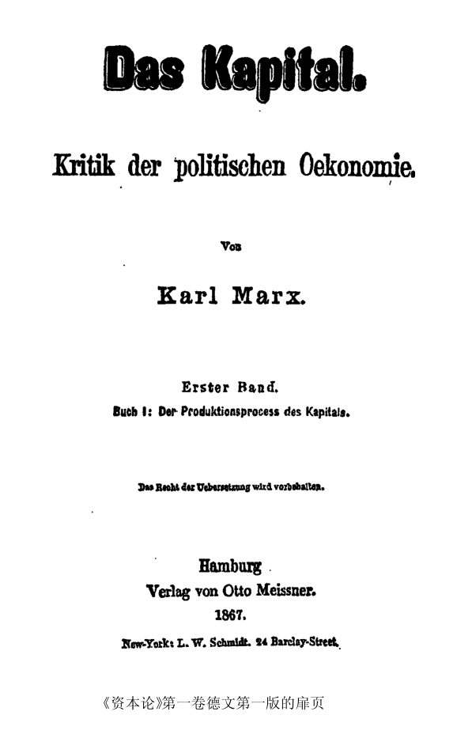

第一版序言[1]
我把这部著作的第一卷交给读者。这部著作是我1859年发表的《政治经济学批判》的续篇。初篇和续篇相隔很久，是由于多年的疾病一再中断了我的工作。
前书的内容已经在本卷第一章作了概述。[2]这样做不仅是为了联贯和完整，叙述方式也改进了。在情况许可的范围内，前书只是略略提到的许多论点，这里都作了进一步的阐述；相反地，前书已经详细阐述的论点，这里只略略提到。关于价值理论和货币理论的历史的部分，现在自然完全删去了。[3]但是前书的读者可以在本书第一章的注释中，找到有关这两种理论的历史的新资料。
万事开头难，每门科学都是如此。所以本书第一章，特别是分析商品的部分，是最难理解的。其中对价值实体和价值量的分析，我已经尽可能地做到通俗易懂。(1)以货币形式为完成形态的价值形式，是极无内容和极其简单的。然而，两千多年来人类智慧对这种形式进行探讨的努力，并未得到什么结果(2)，而对更有内容和更复杂的形式的分析，却至少已接近于成功。为什么会这样呢？因为已经发育的身体比身体的细胞容易研究些。并且，分析经济形式，既不能用显微镜，也不能用化学试剂。二者都必须用抽象力来代替。而对资产阶级社会说来，劳动产品的商品形式，或者商品的价值形式，就是经济的细胞形式。在浅薄的人看来，分析这种形式好像是斤斤于一些琐事。这的确是琐事，但这是显微解剖学所要做的那种琐事。
因此，除了价值形式那一部分外，不能说这本书难懂。当然，我指的是那些想学到一些新东西、因而愿意自己思考的读者。
物理学家是在自然过程表现得最确实、最少受干扰的地方观察自然过程的，或者，如有可能，是在保证过程以其纯粹形态进行的条件下从事实验的。我要在本书研究的，是资本主义生产方式以及和它相适应的生产关系和交换关系。到现在为止，这种生产方式的典型地点是英国。因此，我在理论阐述上主要用英国作为例证。但是，如果德国读者看到英国工农业工人所处的境况而伪善地耸耸肩膀，或者以德国的情况远不是那样坏而乐观地自我安慰，那我就要大声地对他说：这正是说的阁下的事情[5]！
问题本身并不在于资本主义生产的自然规律所引起的社会对抗的发展程度的高低。问题在于这些规律本身，在于这些以铁的必然性发生作用并且正在实现的趋势。工业较发达的国家向工业较不发达的国家所显示的，只是后者未来的景象。
撇开这点不说。在资本主义生产已经在我们那里完全确立的地方，例如在真正的工厂里，由于没有起抗衡作用的工厂法，情况比英国要坏得多。在其他一切方面，我们也同西欧大陆所有其他国家一样，不仅苦于资本主义生产的发展，而且苦于资本主义生产的不发展。除了现代的灾难而外，压迫着我们的还有许多遗留下来的灾难，这些灾难的产生，是由于古老的、陈旧的生产方式以及伴随着它们的过时的社会关系和政治关系还在苟延残喘。不仅活人使我们受苦，而且死人也使我们受苦。死人抓住活人！
德国和西欧大陆其他国家的社会统计，与英国相比是很贫乏的。[6]然而它还是把帷幕稍稍揭开，使我们刚刚能够窥见幕内美杜莎的头。如果我国各邦政府和议会像英国那样，定期指派委员会去调查经济状况，如果这些委员会像英国那样，有全权去揭发真相，如果为此能够找到像英国工厂视察员、编写《公共卫生》报告的英国医生、调查女工童工受剥削的情况以及居住和营养条件等等的英国调查委员那样内行、公正、坚决的人们，那么，我国的情况就会使我们大吃一惊。柏修斯需要一顶隐身帽来追捕妖怪。我们却用隐身帽紧紧遮住眼睛和耳朵，以便有可能否认妖怪的存在。
决不要在这上面欺骗自己。正像18世纪美国独立战争[7]给欧洲中等阶级敲起了警钟一样，19世纪美国南北战争[8]又给欧洲工人阶级敲起了警钟。在英国，变革过程已经十分明显。它达到一定程度后，一定会波及大陆。在那里，它将采取较残酷的还是较人道的形式，那要看工人阶级自身的发展程度而定。所以，现在的统治阶级，撇开其较高尚的动机不说，他们的切身利益也迫使他们除掉一切可以由法律控制的、妨害工人阶级发展的障碍。因此，我在本卷中还用了很大的篇幅来叙述英国工厂立法的历史、内容和结果。一个国家应该而且可以向其他国家学习。一个社会即使探索到了本身运动的自然规律，——本书的最终目的就是揭示现代社会的经济运动规律，——它还是既不能跳过也不能用法令取消自然的发展阶段。但是它能缩短和减轻分娩的痛苦。
为了避免可能产生的误解，要说明一下。我决不用玫瑰色描绘资本家和地主的面貌。不过这里涉及的人，只是经济范畴的人格化，是一定的阶级关系和利益的承担者。我的观点是把经济的社会形态的发展理解为一种自然史的过程。不管个人在主观上怎样超脱各种关系，他在社会意义上总是这些关系的产物。同其他任何观点比起来，我的观点是更不能要个人对这些关系负责的。

在政治经济学领域内，自由的科学研究遇到的敌人，不只是它在一切其他领域内遇到的敌人。政治经济学所研究的材料的特殊性质，把人们心中最激烈、最卑鄙、最恶劣的感情，把代表私人利益的复仇女神召唤到战场上来反对自由的科学研究。例如，英国高教会派[9]宁愿饶恕对它的三十九个信条[10]中的三十八个信条进行的攻击，而不饶恕对它的现金收入的三十九分之一进行的攻击。在今天，同批评传统的财产关系相比，无神论本身是一种很小的过失。但在这方面，进步仍然是无可怀疑的。以最近几星期内发表的蓝皮书[11]《就工业和工联问题同女王陛下驻外使团的信函往来》为例。英国女王驻外使节在那里坦率地说，在德国，在法国，一句话，在欧洲大陆的一切文明国家，现有的劳资关系的变化同英国一样明显，一样不可避免。同时，大西洋彼岸的北美合众国副总统威德先生也在公众集会上说：在奴隶制废除后，资本关系和土地所有权关系的变化会提到日程上来！这是时代的标志，不是用紫衣黑袍遮掩得了的。这并不是说明天就会出现奇迹。但这表明，甚至在统治阶级中间也已经透露出一种模糊的感觉：现在的社会不是坚实的结晶体，而是一个能够变化并且经常处于变化过程中的有机体。
这部著作的第二卷将探讨资本的流通过程（第二册）和总过程的各种形式（第三册），第三卷即最后一卷（第四册）将探讨理论史。[12]
任何的科学批评的意见我都是欢迎的。而对于我从来就不让步的所谓舆论的偏见，我仍然遵守伟大的佛罗伦萨人的格言：
走你的路，让人们去说罢！[13]
卡尔·马克思
1867年7月25日于伦敦
(1) 这样做之所以更加必要，是因为甚至斐·拉萨尔著作中反对舒尔采-德里奇的部分，即他声称已经提出我对那些问题的阐述的“思想精髓”的部分，也包含着严重的误解。顺便说一下，斐·拉萨尔经济著作中所有一般的理论原理，如关于资本的历史性质、关于生产关系和生产方式之间的联系等等，几乎是逐字地——甚至包括我创造的术语——从我的作品中抄去的，而且没有说明出处，这样做显然是出于宣传上的考虑。我当然不是说他在细节上的论述和实际上的应用，这同我没有关系。[4]
(2) 见本卷第74—75页。——编者注
[1] 《资本论》是马克思毕生研究的成果和最主要的著作。马克思写这部著作花费了四十年的时间，从40年代初起直到他逝世。1843年底，马克思在巴黎开始研究政治经济学，目的是要写一部批判现存制度和资产阶级政治经济学的巨著。他在这方面的最初研究成果反映在《1844年经济学哲学手稿》、《德意志意识形态》、《哲学的贫困》、《雇佣劳动与资本》、《共产党宣言》等著作里。这些著作已经揭示了资本主义剥削的原理、资本家的利益和雇佣工人的利益之间不可调和的对立、资本主义经济关系和社会政治关系的对抗性和暂时性。
1848—1849年的革命使马克思暂时中断了经济学的研究。1849年8月马克思被迫侨居伦敦，在那里继续进行这一研究。他深入而全面地研究了资产阶级经济学家的著作、国民经济史和许多国家特别是当时典型的资本主义国家英国的经济。在这一时期，他感兴趣的有资本主义生产方式的起源和重要特点、土地所有制的历史和地租理论、货币流通和价格的历史与理论、经济危机、技术史和工艺史、殖民地等问题。马克思是在非常困难的条件下进行工作的。他必须不断地同贫困作斗争，并且时常要为挣钱维持生活而搁下研究工作。由于在物质条件极差的情况下长期过度劳累，马克思患了重病。虽然如此，到1857年，他已经做好巨大的准备工作，这就使他能够开始对收集的材料进行系统的整理和概括。
1857年7月至1858年6月，马克思写了约五十印张的手稿，这实际上是未来《资本论》的第一草稿。在写作这部手稿的过程中，马克思制定了他准备撰写的政治经济学巨著的计划。这一计划经过不断修订和完善，后来定为六册：（1）资本（包括一些绪论性的章节）；（2）土地所有制；（3）雇佣劳动；（4）国家；（5）国际贸易；（6）世界市场。其中第一册即资本册分为四篇：a资本一般；b竞争；c信用；d股份资本。而第一篇又分为三部分：资本的生产过程；资本的流通过程；两者的统一，或资本和利润、利息。最后这一划分成为后来《资本论》三卷结构的萌芽。马克思最初打算把他写的书分册出版，第一分册“应当是一部比较完整的著作”，它只包括第一册的第一篇，这一篇分为三章：（1）商品；（2）货币或简单流通；（3）资本。但是出于政治上的考虑，第一分册的最后定稿即《政治经济学批判》第一分册一书中没有把第三章放进去。马克思指出，正是从这一章开始了真正的战斗，他认为，在存在官方书报检查、对不合统治阶级心愿的作者进行警察迫害和各种陷害的情况下，在广大的公众尚未了解这部新的著作之前，一开始就出版这一章是不适宜的。为了“第一分册”，马克思专门写了商品一章，并且认真地改写了1857—1858年手稿中关于货币的一章。
《政治经济学批判》第1分册于1859年问世。马克思曾经计划在这之后很快出版第2分册，即上述构成1857—1858年手稿主要内容的资本一章。但是不久，由于必须在报刊上揭露路易·波拿巴雇用的密探卡·福格特的诬蔑性攻击和做其他急事，他不得不停止研究工作达整整一年半之久。只是到1861年8月，他又开始写“第二分册”。他在1862年12月28日给路·库格曼的信中写道：“第二部分终于脱稿，只剩下誊清和付排前的最后润色了。这部分大约有三十印张。它是第一分册的续篇，将以《资本论》为标题单独出版，而《政治经济学批判》只作为副标题。”但实际上那时，确切些说，到1863年中，马克思又写成了另一手稿，其篇幅远远超过1857—1858年的手稿，共二十三个笔记本，约二百印张。其中约有一半（第Ⅵ—ⅩⅧ笔记本）是阐述经济学说史的，以《剩余价值理论》这一书名著称。其余的笔记本在某种程度上涉及三卷《资本论》的问题。1861—1863年的整个手稿被看作《资本论》第二稿。马克思在以后的写作过程中，决定把自己的著作分为三部分。而手稿中有关理论史的部分应构成第四个，即最后一个环节。马克思在1866年10月13日给库格曼的信中写道：“全部著作分为以下几部分：第一册资本的生产过程。第二册资本的流通过程。第三册总过程的各种形式。第四册理论史。”马克思还放弃了过去分册出版这一著作的计划，他决定不妨先基本上完成这部著作，然后再出版。
为此，马克思在1861—1863年手稿的基础上继续致力于完善手稿中还没有得到充分阐述的部分。他补充研究了大量的经济文献和技术文献，其中有关于农业、关于信用和货币流通问题的文献，他研究了统计材料、各种议会文件、关于工业中的儿童劳动和英国无产阶级居住状况的官方报告等等。马克思用两年半的时间（从1863年8月至1865年底）完成了新的、篇幅很大的手稿，这就是三卷《资本论》理论著作的第一个详加琢磨的稿本。只是在全部著作完成（1866年1月）之后，马克思才进行付印前的最后加工。根据恩格斯的建议，他决定不一下子付印全部著作，而是首先只付印第一卷。马克思极其细致地完成了这次最后的加工，这一工作实质上是整个第一卷的一次重新修订。为了叙述的完整、充分和明确，马克思认为，必须在《资本论》第一卷的开头部分扼要地复述1859年出版的《政治经济学批判》第1分册的内容中的主要问题。在目前的版本中，这些问题构成整个第一篇《商品和货币》。
在《资本论》第一卷出版（1867年9月）以后，马克思继续从事第一卷的工作，准备德文版的再版和出版外文译本。他在第2版（1872年）里作了大量的修改，就出版俄译本作了重要的指示。俄译本是1872年在彼得堡出版的，它是《资本论》的第一个外文译本。马克思还对1872—1875年分册出版的法译本进行了大量的加工和校订工作。另一方面，在《资本论》第一卷出版以后，马克思继续从事其他各卷的工作，他打算迅速完成全部著作。但是他没有能做到这一点。国际工人协会总委员会中的多方面的活动占去他许多时间。由于健康状况不好，他不得不越来越频繁地中断工作。马克思高度的科学的认真精神和一丝不苟的态度，严格的自我批评——正如恩格斯所说，马克思就是以这种自我批评的精神，“力求在公布他的经济学方面的伟大发现以前，使它们达到最完善的程度”——使他在研究这一或那一问题时不断地回头作补充的考察。而在这一创作工作的过程中，也出现许多新的问题。《资本论》的后两卷是在马克思逝世后，由恩格斯准备付印和出版的。第二卷于1885年出版，第三卷于1894年出版。这样，恩格斯就对科学共产主义的宝库作出了无法估量的贡献。此外，恩格斯还校订了《资本论》第一卷英译本（1887年），准备了《资本论》第一卷的德文第3版（1883年）和第4版（1890年）。在准备《资本论》第一卷第4版时，恩格斯根据马克思本人的指示，对正文和脚注作了最后的校订。《资本论》最早的中译本是1930年3月上海昆仑书店出版的《资本论》第一卷第一分册，译者是陈启修。《资本论》第一卷的第一个中文全译本由侯外庐、王思华合译，以世界名著译社的名义于1936年6月出版。《资本论》三卷的全译本由郭大力、王亚南翻译，分别于1938年8月和9月由上海读书生活出版社出版。
本卷在《马克思恩格斯全集》中文第1版第23卷的基础上根据《马克思恩格斯全集》1991年历史考证版第2部分第10卷即1890年由恩格斯编辑出版的德文第4版重新作了校订。第4版原来没有收入《资本论》第一卷法文版的序言和跋以及英文版序言，考虑到目前通行的版本都有这些文献，我们在本卷中也加以收入并依据原文重新作了校订。——7。
[2] 《资本论》1867年德文第1版第1卷第1章的标题是《商品和货币》，其中概述了《政治经济学批判》第1分册1859年柏林版的内容。马克思在1866年10月13日给路·库格曼的信中谈到了作这一概述的原因。后来，在准备《资本论》1873年德文第2版时，马克思修订了自己的著作，对它的结构也作了很大的改动。他把原先的第1章和附录改为独立的三章，这三章构成第1篇。关于这些修改的具体情况，见《第二版跋》（本卷第14页）。——7。
[3] 完全删去的是《政治经济学批判》第1分册中《关于商品分析的历史》、《关于货币计量单位的学说》和《关于流通手段和货币的学说》这三节（见《马克思恩格斯全集》中文第2版第31卷第445—457、470—481、552—582页）。马克思在撰写1863—1865年经济学手稿时放弃了他最初的打算，即在每一章理论部分的后面加上理论史的部分，而计划理论史在《资本论》第四册中来叙述，这部分后来曾以《剩余价值理论》为书名发表。——7。
[4] 指斐·拉萨尔《巴师夏-舒尔采-德里奇先生，经济学上的尤里安，或者：资本和劳动》一书的第Ⅲ章《交换、价值和自由竞争》（见该书1864年柏林版第120—158页），其中拉萨尔在第149页上指明参看马克思1859年的《政治经济学批判》一书。
有关拉萨尔的抄袭行为，见马克思1864年6月3日给恩格斯和1866年10月13日给路·库格曼的信。——7。
[5] 只要换一个名字，这正是说的阁下的事情（Mutato nomine de te fabula narratur），这句话引自贺拉斯《讽刺诗集》第1卷第1首。——8、308。
[6] 英国应用社会统计比德国早得多。1662年伦敦市的官员约·格朗特首次把计算具体地运用于人口统计。但政治算术（统计）的真正创始人是威·配第，他在1676年写成的《政治算术》这一著作中用算术方法来分析社会经济问题。——9。
[7] 美国独立战争即1775—1783年北美独立战争，它是英国十三个北美殖民地推翻英国统治、争取独立的战争。七年战争后英国加强对北美殖民地的压迫和剥削，激起当地新兴资产阶级和人民群众的反抗。1774年北美殖民地代表召开第一届大陆会议，通过呈交英王的请愿书和抵制英货的法案。1775年4月19日，战争在列克星敦爆发，5月10日在费城召开的第二届大陆会议，决定组织大陆军，任命华盛顿为总司令。1776年7月4日在进行反英战争中的大陆会议通过《独立宣言》，宣告美利坚合众国的成立。1781年9月，英军主力在约克镇被击溃，被迫讲和，最后于1783年9月战争双方签订巴黎和约。在条约中英国正式承认美国独立，取得胜利的北美人民建立了美洲第一个资产阶级共和国。——9。
[8] 美国南北战争即1861—1865年的美国内战。19世纪中叶，美国南部种植园主奴隶制与北部资产阶级雇佣劳动制的矛盾日益尖锐。1860年11月主张限制奴隶制的共和党候选人林肯当选为总统，美国南部的奴隶主发动了维护奴隶制的叛乱。1861年2月南部先后宣布独立的十一个州在蒙哥马利大会上成立美国的南部同盟，公开分裂国家，并于当年4月12日炮轰萨姆特尔堡垒（南卡罗来纳州），挑起内战。1865年4月，南部同盟的首都里士满被占领，南部同盟的联军投降，战争结束。北部各州在南北战争中取得了胜利，维护了国家的统一，并为资本主义的蓬勃发展扫清了道路。——9、35、196、223、296、329、348、411、454、491、498、524、619、662、839、886。
[9] 高教会派是英国国教会中的一派，产生于19世纪，它的信仰者主要是土地贵族和金融贵族。主张保持古老的豪华仪式，强调与天主教徒的传统的联系。英国国教会中与高教会相对立的另一派为低教会派（见注448），拥护者主要是资产阶级和下层教士，具有新教倾向。——10、712、744。
[10] 三十九个信条是英国国教会的信仰纲要。女王伊丽莎白一世主持制定。1562年女王审订批准克兰默起草的四十二条款，后压缩为三十九条。1563年起，所有神职人员就职时必须宣誓恪守这些信条，1571年英国国会通过法案，三十九条正式成为英国国教会的信条。——10。
[11] 蓝皮书（Blue Books）是英国议会或政府的以及政府向议会提交的文件或报告书的通称。因封皮为蓝色而得名，英国从17世纪开始发表蓝皮书，它是研究英国经济史和外交史的主要的官方资料。——10、30、293、569。
[12] 马克思未能实现他的计划。在他逝世后，《资本论》第二册和第三册作为他的主要著作的第二卷和第三卷先后于1885年和1894年由恩格斯编辑出版。恩格斯没有能出版《资本论》第四册。——13、404。
[13] “走你的路，让人们去说罢！”（Segui il tuo corso，e lascia dir le genti！）是套用但丁《神曲》中《炼狱篇》第5首中的一句（Vien dietro a me，e lascia dir le genti）。——13。